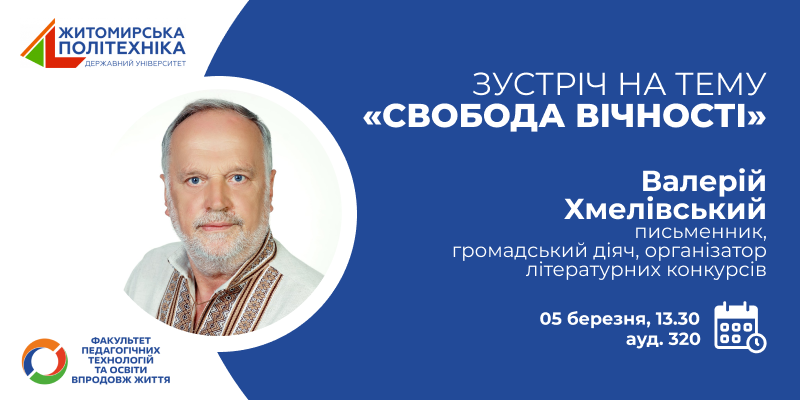
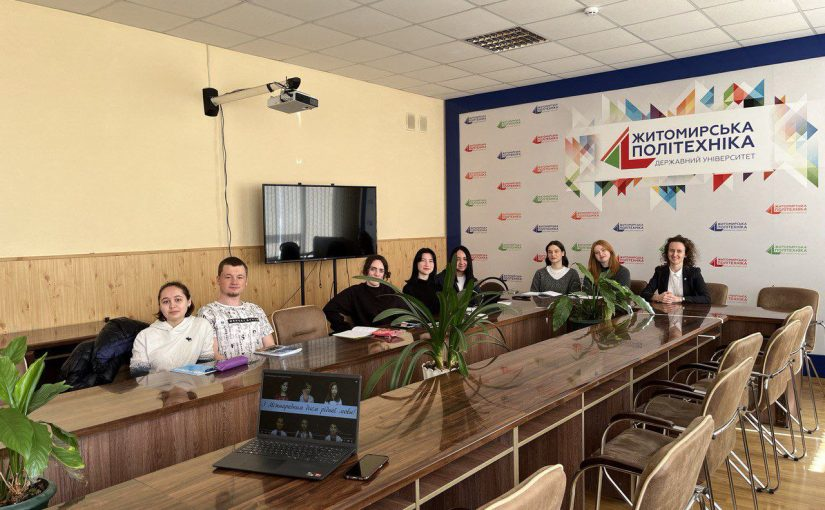

Запрошуємо на творчу зустріч на тему «Свобода вічності» з Валерієм Хмелівським
До Міжнародного дня письменника факультет педагогічних технологій та освіти впродовж життя організовує творчу зустріч з письменником, громадським діячем, організатором літературних конкурсів Валерієм Хмелівським. Тема зустрічі – «Свобода вічності». Запрошуємо всіх бажаючих!

Міжнародний день рідної мови у Житомирській політехніці
З нагоди Міжнародного дня рідної мови на факультеті педагогічних технологій та освіти впродовж життя відбулися цікаві заходи, присвячені вшануванню нашої мовної спадщини та культурного багатства, підкреслюючи важливість мови як основного елементу нашої національної та культурної ідентичності. Проведені викладачами факультету заходи та активності були спрямовані на підвищення усвідомлення важливості рідної мови серед студентів та викладачів.